01
Cinema Culture
A year-round cultural home where cinema is treated as art, craft, community, memory, conversation, and civic life.

A nonprofit cinematic cultural institution
Georgia is ready for a cinematic institution built with the long view in mind.
Georgia Film Society is building a year-round home for cinema, filmmakers, patrons, students, and audiences across Georgia and the Southeast.
Institutional thesis
Production infrastructure alone does not create cultural leadership. Great artistic regions are strengthened through institutions, through hospitality, through curation, and through places that still believe the work matters.
Why Georgia. Why now.
Georgia and the South are entering a defining creative era. The state already supports filmmakers, writers, producers, craftspeople, entrepreneurs, technologists, and creative leaders whose influence extends far beyond production logistics.
Georgia Film Society is being built to cultivate the deeper ecosystem: screenings, salons, education, memberships, patronage, filmmaker support, cultural conversation, future storytelling, and a flagship festival worthy of serious attention.
The foundation
01
A year-round cultural home where cinema is treated as art, craft, community, memory, conversation, and civic life.
02
A filmmaker-first institution centered on merit, seriousness, hospitality, discovery, and meaningful creative support.
03
A thoughtful space for the future of cinema, technology, ethics, artistic innovation, and human creative culture.
Year-round ecosystem
The launch site should imply a larger world without pretending every program already exists. GFS can be ambitious and honest at the same time.
Seasonal film gatherings with conversation, context, and hospitality.
Private gatherings for members, patrons, filmmakers, and cultural guests.
Focused environments for serious storytellers developing original work.
Access pathways for students, educators, interns, and future filmmakers.
A gathering around storytelling, regional identity, craft, and cultural leadership.
Thoughtful conversation on creativity, technology, ethics, and cinematic innovation.
Cardennes Film Festival
Cardennes is a prestige discovery festival centered on merit, curation, hospitality, and serious cinematic work.
Explore CardennesCardennes is the crown jewel, not the whole crown.
Georgia Film Society should make the relationship clear without becoming the festival site. Festival-specific submissions, tickets, schedule, passes, press, and festival news belong with Cardennes.
Paths into the institution
Members
Membership is the doorway into screenings, conversations, member events, early announcements, and the cultural life being built around cinema in Georgia.
Membership opens soonPatrons
Founding patrons do more than fund programming. They help establish what this institution can become for filmmakers, students, audiences, and future storytellers.
Support the SocietyPartners
GFS is developing partnership pathways around prestige, regional identity, innovation, education, storytelling, hospitality, and cultural impact.
Partner with GFSThe conviction
Georgia Film Society is being built with the long view in mind: a cultural institution rooted in storytelling, artistic ambition, hospitality, creative discovery, and the enduring belief that great work still deserves serious support.